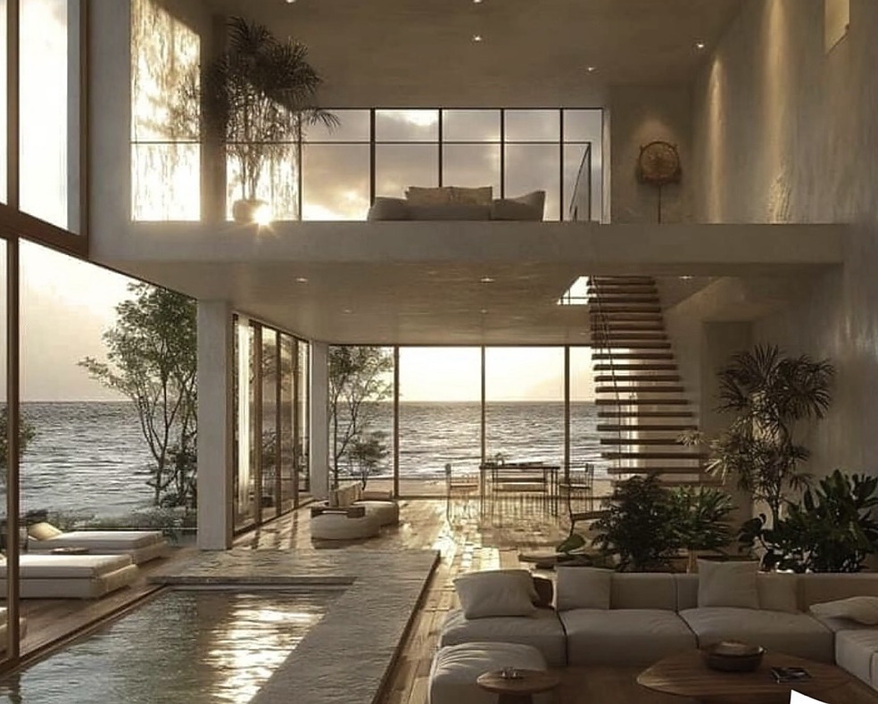
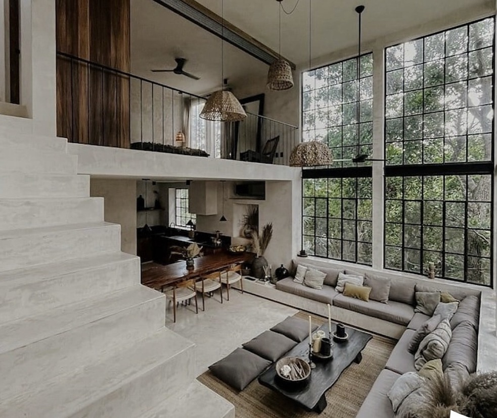
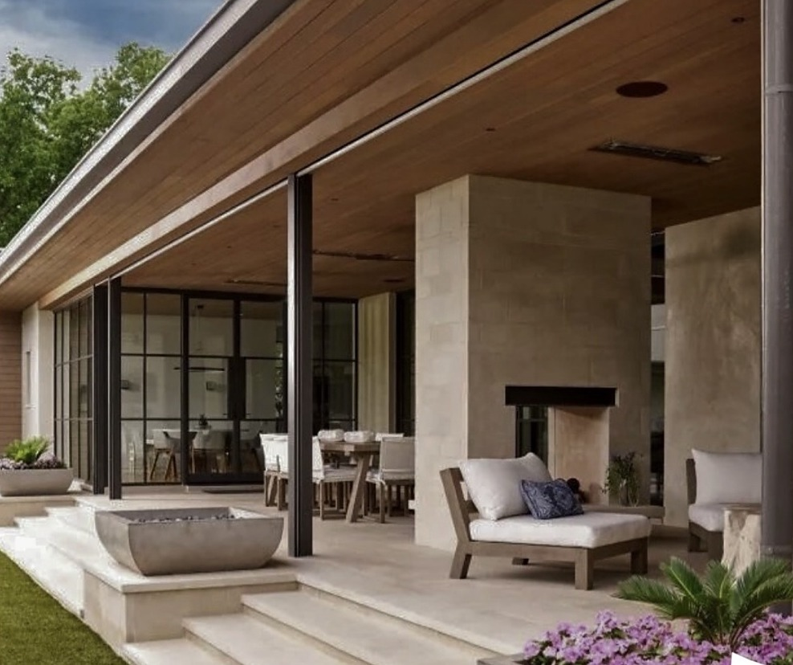

División 01 · Arquitectura

Espacio, Estructura y Luz
Dirección: Arq. Jorge Zelaya · Obra Integral en Honduras

Dirección: Arq. Jorge Zelaya · Obra Integral en Honduras

Dirección: Crista Corrales · Taller de Autor
No construimos metros cuadrados en serie; proyectamos cómo se habita el espacio desde el primer trazo estructural hasta la última veta de madera. Dos divisiones especializadas operando bajo un mismo criterio técnico y estético.
Eliminamos la fricción entre quien construye la obra y quien viste los interiores. Estructura, iluminación y ebanistería fina nacen en la misma mesa de diseño.
Cada residencia, proyecto comercial o mueble en madera sólida responde al clima, la luz y el carácter de quien lo habita. Cero fórmulas repetidas.
Ejecutamos y entregamos proyectos completos en Tegucigalpa, Roatán, Tela, Copán, Choluteca y cualquier destino del país con supervisión directa.
Cuatro piezas representativas de nuestro diálogo entre arquitectura y ebanistería. Tocá cualquier lámina para abrir su ficha técnica y solicitar asesoría directa.

Ver Ficha Técnica → Ver Ficha Técnica →
Ver Ficha Técnica →
 Ver Ficha Técnica →
Ver Ficha Técnica →
 Ver Ficha Técnica →
Ver Ficha Técnica →



Desde una residencia completa hasta el equipamiento integral de un espacio comercial, nuestro proceso sincroniza obra gris, acabados y ebanistería en una sola línea de mando.
Detrás de cada plano y cada ensamble hay nombre, criterio y presencia directa en obra. La solidez de Tribu nace del equilibrio entre la escala arquitectónica y la sensibilidad artesanal.

Director de Arquitectura y Construcción
“La buena arquitectura no compite con su entorno; ordena la luz, respeta la proporción y resiste el paso de las décadas.”
Al frente de la proyección arquitectónica y ejecución constructiva, Jorge dirige desde residencias de autor hasta desarrollos comerciales y corporativos llave en mano a nivel nacional.
Consultar con Arq. Jorge →
Directora de Mobiliario y Acabados
“Un espacio cobra vida cuando tocás sus superficies: la madera sólida, el ensamble preciso y la calidez de un acabado honesto.”
Al mando del taller de mobiliario y la curaduría interior, Crista traduce cada ambiente en piezas atemporales fabricadas a medida con maderas nobles, latón y acabados de galería.
Consultar con Crista →Explorá nuestras obras arquitectónicas y piezas de mobiliario en formato monográfico, revisá especificaciones de materialidad y solicitá cotización directa sin intermediarios.
Abrir Catálogo Dual Completo →